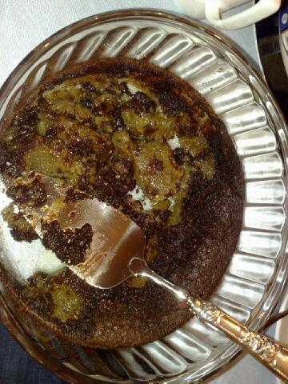
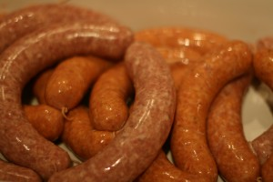

Slik kan det gå… (hvis du ikke følger oppskriften)
En leser av denne bloggen skulle prøve seg på sjokoladekaken. Alt gikk bra helt frem til vedkommende skulle smelte sjokoladen i mikroen i stedet for å gjøre det i et vannbad sammen med smøret.
Selv om det i de fleste tilfeller faktisk kan gå bra å bruke mikrobølgeovn, bør denne kaken lages slavisk etter fremgangsmåten. Fordi det sikrer at smøret og sjokoladen varmes opp i samme tempo og blandes godt.
Dette er en fin artikkel om sjokoladetemperering.
Resultatet av mikrobølgekaken ser dere under:
Sitat fra gjestene: , "”": Hva er gelelaget i bunnen? Litt pussig smak på det. Laget i midten var for øvrig godt.”
Kan forresten fortelle at mange spennende retter vil være å finne her snart. I dag lagde vi pølser. Jepp, hjemmelagde pølser:
